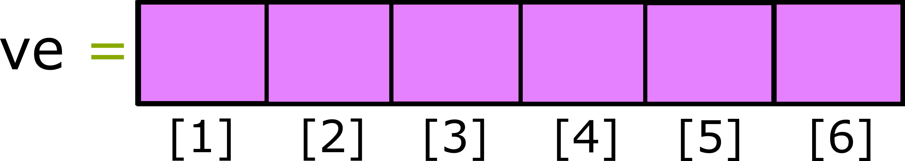
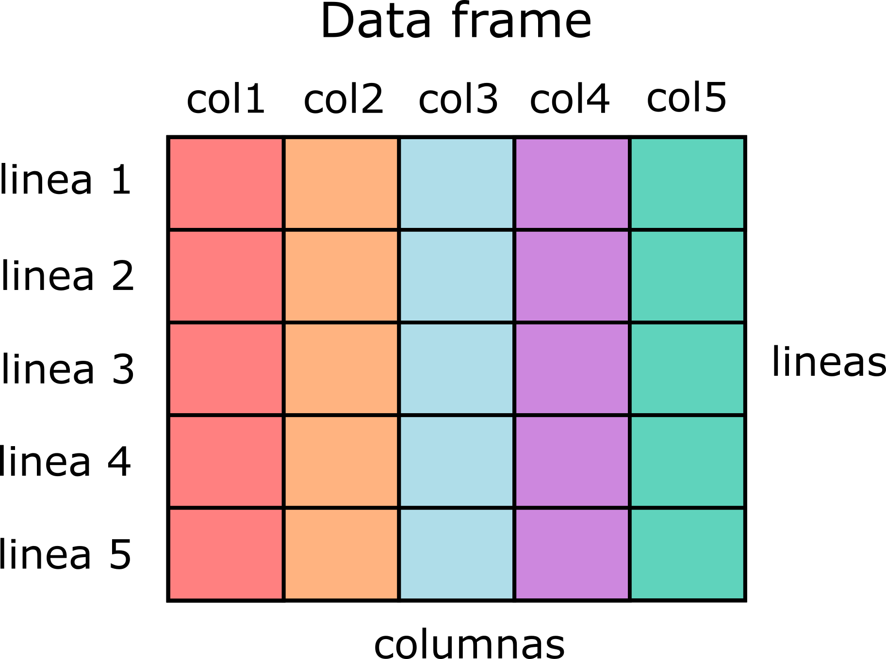
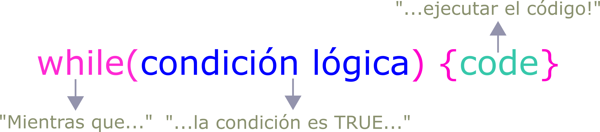
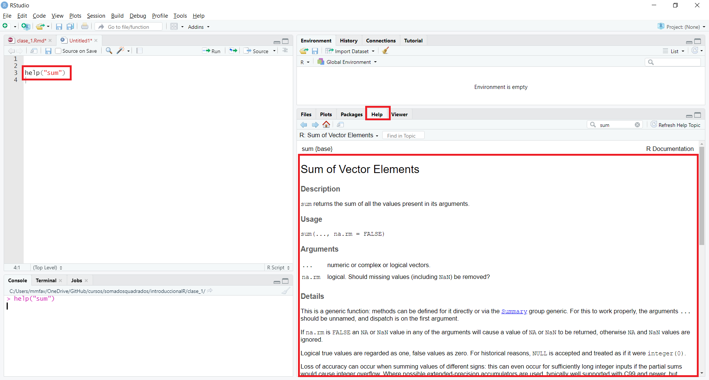

Introducción
.center[ ]
]
.center[]
> > > > > select UTF-8
.center[ ]
]
| # Script |
- clase_1.R |
| # Contenido de hoy |
| - Objetos y atribuciones |
| - Clases |
| - Tipos de objetos |
| - Estructuras de Control |
| - Funciones |
name: objatr class: middle, center
| ## Objetos y atribuciones |
| - Los objetos son variables capazes de almacenar cualquier valor o estructura de datos. |
.center[  ] ]
|
r objeto <- 6 # Guardamos el valor '6' en 'objeto' con '<-' objeto # Siempre que evaluamos el `objeto`, la R devolverá el valor 6 |
## [1] 6 |
> El símbolo = se puede utilizar en lugar de <- pero no se recomienda. |
j <- 14…está haciendo una declaración, es decir, declarando que la variable j ahora se convertirá en un objeto que contiene el número 14. Las declaraciones se pueden hacer una en cada línea …
j <- 14
y <- 24… o separados por ;
j <- 14; y <- 24podemos usar el ; siguiendo la asignación para llamar a nuestro objeto y ver su contenido:
j <- 14; j## [1] 14| ## Objetos y atribuciones |
| #### Otros ejemplos de creación de objetos |
r b <- 24 b |
## [1] 24 |
r c <- 69 c |
## [1] 69 |
r d <- "e" d |
## [1] "e" |
r e <- "d" e |
## [1] "d" |
¡¡Tenga en cuenta que cada objeto solo puede almacenar una estructura a la vez (un número o una secuencia de valores)!!
a <- 5
a## [1] 5a <- "bien"
a## [1] "bien"a <- 36924612
a## [1] 36924612| ## Reglas para nombrar objetos |
| 1. Pueden estar formados por letras, números, "*_*" y “.” |
| 2. No se puede empezar con un número y/o un punto |
| 3. No puede contener espacios |
| 4. Evitar el uso de acentos |
| 5. Evitar el uso de nombres de funciones como: |
| > sum, diff, df, var, pt, data, C, etc |
| 6. La R distingue entre mayúsculas y minúsculas, por lo que: |
| > obj ≠ Obj ≠ OBJ |
a <- 5
a1 <- 5
obj <- 10
mi_obj <- 15
mi.obj <-151a <- 1
a 1 <- 5
_obj <-15
mi-obj <- 15| ## Objetos y atribuciones |
Podemos almacenar el valor de un objeto k dentro de un objeto w: |
r k <- 10 w <- k w |
## [1] 10 |
| Podemos usar objetos para realizar operaciones matemáticas… |
r a + y / j |
## [1] 36924614 |
| … y podemos asignar esta operación matemática a un nuevo objeto. |
r k <- a + y / j |
Enumere los objetos creados con la función ls():
ls()## [1] "a" "b" "c" "d" "e" "j" "k" "objeto"
## [9] "w" "y"Para eliminar solo un objeto con rm():
rm(a) # elimina el objeto 'obj'
ls() # ¿Qué objetos quedan?## [1] "b" "c" "d" "e" "j" "k" "objeto" "w"
## [9] "y"| ## Gestionar el lugar de trabajo |
Para eliminar> 1 objeto con rm(): |
r rm(c, j, k) # elimina los objetos 'c', 'j' y 'k' ls() # ¿Qué objetos quedan? |
## [1] "b" "d" "e" "objeto" "w" "y" |
| Para eliminar todos los objetos: |
r rm(list = ls()) # elimina TODOS los objetos ls() # ¿Qué objetos quedan? |
## character(0) |
La pestaña “Environmental” de RStudio muestra los objetos creados hasta ahora en la sesión actual.
.pull-left[ Fuiste al campo y recogiste algunos mosquitos, que se enumeran en la siguiente tabla.
| Objeto | n |
|---|---|
| Anopheles_sp | 5 |
| Lutzomyia_sp | 35 |
| Aedes_sp | 4 |
| Desconocido | 16 |
]
.pull-right[ 1 - Cree objetos para cada especie de mosquito y almacene el número de individuos en cada objeto (n en la tabla).
2 - Cree objetos para cada especie de mosquito y almacene el número de individuos en cada objeto (n en la tabla).
3 - ¿Qué porcentaje de Lutzomyia sp. se muestreó?
4 - Si eliminamos los mosquitos desconocidos, ¿cuál es la cantidad total muestreada? ¿Y cuál es el porcentaje de Aedes? ]
Los objetos tienen tres características:
a <- 1
Nombre que le damos al objeto (= a)
Contenido en sí del objeto (= 1)
Atributo del objeto
Clase: naturaleza del elementos (1 = numerico)Estructura: Cómo están organizados los elementos (a = vector)| ## Clases de objetos |
| La clase de un objeto es muy importante en R! Es a partir de él que las funciones y los operadores pueden saber exactamente qué hacer con un objeto. |
Por ejemplo, es posible sumar dos objetos numéricos,…
a = 1
b = 2
a + b## [1] 3–
… pero no podemos sumar dos caracteres:
c = "c"
d = "!"
c + d## simpleError in “c” + “d”: argumento no numérico para el operador binario.
R verificó la naturaleza de “c” y “d” y las identificó como no numéricas.
| ## Clases de objetos |
| ### Objetos atómicos |
| R tiene 5 clases básicas de objetos, también llamados objetos atómicos: |
.pull-left[
1 - numeric: Números reales, punto flotante (enteros o decimales). |
r num <- 1.50 |
2 - integer: Números enteros. |
r num_int <- 1L |
3 - logical: booleano (True/False). |
r logtf <- TRUE
] |
.pull-right[
4 - character: una cadena de caracteres, comúnmente utilizada para representar palabras, frases o texto. |
r ca <- "holla!" |
5 - complex: Un número con partes reales e imaginarias. |
r com <- 1.5 + 2i
] |
1 - Use la función* class() en R para verificar si la clase de su objeto es correcta:
aa <- 1
class(aa)## [1] "numeric"> * La idea básica de una función es encapsular un código que se pueda invocar en cualquier momento en R. Su significado y uso son muy similares al de las funciones matemáticas, es decir, hay un nombre, una definición y posterior invocación de la función.
.pull-left[
f <- function(x) {
y <- 6
x + y
}
f(5)## [1] 11]
.pull-right[
5 + 6## [1] 11** Hablaremos más sobre las funciones más adelante. ]
| ## Clases de objetos |
#### Importante!
2 - Las expresiones de tipo character deben aparecer entre comillas simples o dobles: |
r bb <- 'Esto es un character!' bb |
## [1] "Esto es un character!" |
r cc <- "Lo mismo (:" cc |
## [1] "Lo mismo (:" |
r dd <- "I'm gonna take my horse to the old town road ♫" dd |
## [1] "I'm gonna take my horse to the old town road <U+266B>" |
3 - Los números en R generalmente se tratan como objetos numeric (números reales de doble precisión), incluso los que escribimos como enteros.
Para que un entero se trate como un objeto integer, debe usar la letra L después del número:
dd <- 1
class(dd) # NO interpretado como integer## [1] "numeric"ee <- 1L
class(ee) # interpretado como integer## [1] "integer"| ## Clases de objetos |
| #### Importante! |
4 - Los valores logical (o booleanos) son TRUE (verdaderos) o FALSE (falsos). También se aceptan T o F. |
| ```r ff <- T gg <- TRUE |
| ff == gg ``` |
## [1] TRUE |
| ```r hh <- F ii <- FALSE |
| hh == ii ``` |
## [1] TRUE |
| > == : operador matemático “exactamente igual a …” |
1 - Crea un objeto para las clases numeric, integer, character e logical y comprueba que lo hizo correctamente.
2 - Trabajará con un modelo matemático en el que la variable de respuesta tiene una distribución de Poisson. Tu variable de respuesta es:
vr <- c(20, 22, 21, 26, 14, 30, 21, 39)Escribe la ‘vr’ para que la clase coincida con el tipo integer.
.pull-left[ - El tipo del objeto está relacionado con la clase y la estructura/organización.
Pueden estar formados por elementos de la misma clase o de clases diferentes.
Pueden tener de una hasta n dimensiones.
En R tenemos cinco estructuras:
VectorMatrixArrayListData frame
].pull-right[
 ]
]
| ## Tipos de objetos |
| .pull-left[ - El tipo del objeto está relacionado con la clase y la estructura/organización. |
| - Pueden estar formados por elementos de la misma clase o de clases diferentes. |
| - Pueden tener de una hasta n dimensiones. |
- En R tenemos cinco estructuras:
- Vector
- Matrix
- Array
- List
- Data frame
] |
.pull-right[
 ]
] |
.center[]
Almacena datos de una misma clase.
La forma más sencilla de crear un vector es enumerar los valores separados por comas dentro de una c():
.pull-left[
area <- c("urb", "rur", "urb", "rur", "urb", "rur")
area## [1] "urb" "rur" "urb" "rur" "urb" "rur"]
.pull-right[
temperatura <- c(20, 23, 18, 20, 14, 17)
temperatura## [1] 20 23 18 20 14 17]
| ## Tipos de objetos |
| ### Vetores |
| #### Coerción |
| - No es posible mezclar datos de dos clases en un vector. |
| - Si lo intenta, R exhibirá el comportamiento conocido como coerción. |
r aa <- c(1, 2, 3, 4, "a") class(aa) |
## [1] "character" |
r bb <- c(1L, 2L, 3.50, 4.1) class(bb) |
## [1] "numeric" |
| > DOMINANTE character > numeric > integer > logical RECESIVO |
a <- 1.pull-left[
a1 <- as.character(a)
class(a1)## [1] "character"a2 <- as.integer(a)
class(a2)## [1] "integer"]
.pull-right[
a3 <- as.numeric(a)
class(a3)## [1] "numeric"a4 <- as.logical(a)
class(a4)## [1] "logical"]
| ## Tipos de objetos |
| ### Vetores |
| Hay algunas formas prácticas de crear vectores… |
- Secuencia de unidade: x1:xn. |
r anos <- 2001:2021 anos |
## [1] 2001 2002 2003 2004 2005 2006 2007 2008 2009 2010 2011 2012 2013 2014 2015 ## [16] 2016 2017 2018 2019 2020 2021 |
- Secuencia con espaciado diferente: seq() |
r edad <- seq(from = 0, to = 80, by = 20) edad |
## [1] 0 20 40 60 80 |
rep().area <- rep(x = c("urb", "rur"), times = 3)
area## [1] "urb" "rur" "urb" "rur" "urb" "rur"mes <- rep(x = c(1, 2), times = 3)
mes## [1] 1 2 1 2 1 2| ## Tipos de objetos |
| ### Vetores |
- Nombres con secuencia numérica: paste(). |
r # Sin una separación definida muestras <- paste("muestra", 1:10) muestras |
## [1] "muestra 1" "muestra 2" "muestra 3" "muestra 4" "muestra 5" ## [6] "muestra 6" "muestra 7" "muestra 8" "muestra 9" "muestra 10" |
r # Con una separación definida muestras <- paste("muestra", 1:10, sep = "_") muestras |
## [1] "muestra_1" "muestra_2" "muestra_3" "muestra_4" "muestra_5" ## [6] "muestra_6" "muestra_7" "muestra_8" "muestra_9" "muestra_10" |
sample().# sorteo sin reemplazo
sorteo1 <- sample(1:100, 20, replace = F)
sorteo1## [1] 16 88 83 39 95 94 76 79 67 72 87 92 52 31 81 59 58 8 23 35# sorteo con reemplazo
sorteo2 <- sample(1:100, 20, replace = T)
sorteo2## [1] 80 59 80 68 21 38 93 40 48 10 1 60 53 35 35 40 31 93 43 6| ## Tipos de objetos |
| ### Vetores |
| - ¡Muy importante para el análisis de datos! |
- Un data frame se compone de diferentes vectores. |
| .center[ ] |
Pertenece (%in%) es un operador muy útil cuando necesitamos verificar si un cierto valor está dentro de nuestro conjunto de valores (vector):
# ¿recuerdas el objeto "área" que creamos?
area## [1] "urb" "rur" "urb" "rur" "urb" "rur"# ¿Hay 'valores' llamados 'urb' en él?
"urb" %in% area## [1] TRUE# ¿Hay 'valores' llamados 'for'?
"for" %in% area## [1] FALSE| ## Tipos de objetos |
| ### Vetores |
| #### Ejercicios |
| 1. Comenzará un estudio con flebótomos en la ciudad de Puerto Iguazú y deberá seleccionar al azar 3 de 10 vecindarios para el muestreo. Haga un sorteo con y almacena los resultados en un objeto. |
2. Crear un nuevo objeto mediante la repetición de los barrios donde recogerá los flebótomos 4 veces (una por cada estación de barrio). Por ejemplo, si va a muestrear los vecindarios “1”, “3” y “6”, el resultado debería ser (1, 3, 6, 1, 3, 6, 1, 3, 6, 1, 3, 6). |
| 3. ¿El barrio “1” forma parte de su muestra? ¿Y el barrio “10”? ¿Y el “7”? |
Colección unidimensional de valores.
Almacena datos de la clase character.
El factor representa medidas de una variable cualitativa, que puede ser nominal u ordinal.
temporada <- factor(x = c("verano", "verano", "primavera", "primavera", "primavera", "otono", "invierno", "invierno"),
levels = c("verano", "primavera", "otono", "invierno"))
temporada## [1] verano verano primavera primavera primavera otono invierno
## [8] invierno
## Levels: verano primavera otono invierno| ## Tipos de objetos |
| ### Factor |
> Internamente, R almacena los factores como interger. |
.center[] |
genero <- factor(x = c("Lonomia", "Megalopyge", "Automeris", "Hylesia", "Megalopyge", "Automeris", "Hylesia", "Lonomia", "Hylesia", "Megalopyge"),
levels = c("Lonomia", "Megalopyge", "Hylesia", "Automeris"))
genero## [1] Lonomia Megalopyge Automeris Hylesia Megalopyge Automeris
## [7] Hylesia Lonomia Hylesia Megalopyge
## Levels: Lonomia Megalopyge Hylesia Automerislevels(genero)## [1] "Lonomia" "Megalopyge" "Hylesia" "Automeris"| ## Tipos de objetos |
| ### Factor |
| #### Tipos |
| - Factor ordinal: variable ordinal. |
r mes <- factor(x = c("Janeiro", "Janeiro", "Fevereiro", "Fevereiro", "Março", "Março"), levels = c("Janeiro", "Fevereiro", "Março"), ordered = TRUE) mes |
## [1] Janeiro Janeiro Fevereiro Fevereiro Março Março ## Levels: Janeiro < Fevereiro < Março |
r levels(mes) |
## [1] "Janeiro" "Fevereiro" "Março" |
Convertir un vector para un factor: as.factor().
# Vector de caracteres.
letras <- c("a", "c", "b", "d", "c", "a", "b", "d", "c")
letras## [1] "a" "c" "b" "d" "c" "a" "b" "d" "c"# Convierta el objeto en factor.
letras2 <- as.factor(letras)
letras2## [1] a c b d c a b d c
## Levels: a b c d| ## Tipos de objetos |
| ### Factor |
| #### Ejercicios |
| Muestrará en tres áreas diferentes de Puerto Iguazú (Misiones, Argentina): |
| 1. El Parque Nacional Iguazú (PNI) |
| 2. un área antropogénica |
| 3. un área rural |
| De esta manera, cree un vector que repita 12 veces el nombre de cada ubicación de recolección (= 1 año de muestreo). |
Colección bidimensional de valores:
líneas (por ejemplo, unidades de muestreo)
columnas (variables cuantitativas o cualitativas, por ejemplo: horario, tubo de ensayo, ubicación)
Almacena datos de una única clase.
.center[ ]
]
| ## Tipos de objetos |
| ### Matrix |
| - Colección bidimensional de valores: |
| - líneas (por ejemplo, unidades de muestreo) |
| - columnas (variables cuantitativas o cualitativas, por ejemplo: horario, tubo de ensayo, ubicación) |
| - Almacena datos de una única clase. |
.center[ ] ] |
Puede construir matrices en R de dos formas:
1 - Disposición de elementos de un vector: matrix().
ma <- 1:12
ma## [1] 1 2 3 4 5 6 7 8 9 10 11 12.pull-left[
m <- matrix(data = ma, nrow = 4, ncol = 3, byrow = TRUE)
m## [,1] [,2] [,3]
## [1,] 1 2 3
## [2,] 4 5 6
## [3,] 7 8 9
## [4,] 10 11 12]
.pull-right[
m <- matrix(data = ma, nrow = 4, ncol = 3, byrow = FALSE)
m## [,1] [,2] [,3]
## [1,] 1 5 9
## [2,] 2 6 10
## [3,] 3 7 11
## [4,] 4 8 12]
| ## Tipos de objetos |
| ### Matrix |
| Puede construir matrices en R de dos formas: |
| 2 - Combinación de vectores: |
r # Creamos dos vectores con r v1 <- c(1, 2, 3); v2 <- c(4, 5, 6) |
.pull-left[
- Combinar vectores por línea - rbind(). |
r # Combinamos los vectores verticalmente, # uno debajo del otro vr <- rbind(v1, v2) vr |
## [,1] [,2] [,3] ## v1 1 2 3 ## v2 4 5 6 |
| ] |
.pull-right[
- Combinar vectores por columna - cbind(). |
r # Combinamos los vectores horizontalmente, # uno al lado del otro. vr <- cbind(v1, v2) vr |
## v1 v2 ## [1,] 1 4 ## [2,] 2 5 ## [3,] 3 6
] |
Para cambiar el nombre de las filas y columnas de una matrix, utilice las funciones rownames() y colnames() respectivamente.
.pull-left[ - Antes
ma <- 1:12
m <- matrix(data = ma, nrow = 4, ncol = 3, byrow = TRUE)
m## [,1] [,2] [,3]
## [1,] 1 2 3
## [2,] 4 5 6
## [3,] 7 8 9
## [4,] 10 11 12]
.pull-right[ - Después
colnames(m) <- c("A", "B", "C") # cambia columnas
rownames(m) <- c("LA", "LB", "LC", "LD") # cambia lineas
m## A B C
## LA 1 2 3
## LB 4 5 6
## LC 7 8 9
## LD 10 11 12]
| ## Tipos de objetos |
| ### Matrix |
| #### Ejercicios |
| Está desarrollando un medicamento para la fiebre y desea analizar el efecto a lo largo del tiempo. Tiene 3 pacientes y midió su fiebre después de la medicación en los tiempos: 5 m, 10 m, 15 m, 20 m y 25 m. Los resultados son: |
| - Paciente 1: 38, 37.9, 37.3, 37.2, 36.9 - Paciente 2: 37.9, 37.6, 37.1, 36.8, 36 - Paciente 3: 38.2, 38, 37.8, 37.2, 36.8 |
| Configure una matriz de datos con pacientes en filas y tiempos en columnas. |
Tiene n dimensiones - “varias matrices emparejadas”.
Tiene filas, columnas y dimensiones (arrays).
Almacena datos de una única clase.

| ## Tipos de objetos |
| ### Array |
Construir un array en R: array(). |
r vc <- 1:8 # datos ar <- array(data = vc, dim = c(2, 2, 2)) # array ar |
## , , 1 ## ## [,1] [,2] ## [1,] 1 3 ## [2,] 2 4 ## ## , , 2 ## ## [,1] [,2] ## [1,] 5 7 ## [2,] 6 8 |
.pull-left[ - El tipo del objeto está relacionado con la clase y la estructura/organización.
Pueden estar formados por elementos de la misma clase o de clases diferentes.
Pueden tener de una hasta n dimensiones.
En R tenemos cinco estructuras:
VectorMatrixArrayListData frame
].pull-right[
 ]
]
| ## Tipos de objetos |
| ### Data frame |
| - Colección bidimensional de valores: |
| - líneas (unidades de muestreo) |
| - columnas (variables cuantitativas o cualitativas, por ejemplo: horario, tubo de ensayo, ubicación) |
| - Almacena datos de ≠ clases. |
| .pull-left[] |
.pull-right[
 ]
]
| ## Tipos de objetos |
| ### Data frame |
Cómo construir un data frame en R: data.frame(). |
| .pull-left[ |
| ```r # Vamos a crear 4 vectores area <- c(“urb”, “rur”, “urb”, “rur”, “urb”, “rur”) mes <- c(1, 1, 2, 2, 3, 3) presencia <- c(T, T, F, F, T, T) temperatura <- c(20.1, 21.2, 22.2, 23.8, 22.9, 23) |
| area; mes; presencia; temperatura ``` |
## [1] "urb" "rur" "urb" "rur" "urb" "rur" |
## [1] 1 1 2 2 3 3 |
## [1] TRUE TRUE FALSE FALSE TRUE TRUE |
## [1] 20.1 21.2 22.2 23.8 22.9 23.0
] |
.pull-right[
# Unamos los vetores en un dataframe.
# Observe que cada vector se convierte en una columna.
dtf <- data.frame(area, mes, presencia, temperatura)
dtf## area mes presencia temperatura
## 1 urb 1 TRUE 20.1
## 2 rur 1 TRUE 21.2
## 3 urb 2 FALSE 22.2
## 4 rur 2 FALSE 23.8
## 5 urb 3 TRUE 22.9
## 6 rur 3 TRUE 23.0]
Cree un data frame con los datos de su investigación (máximo de 6 filas y 6 columnas). Si no tiene datos, utilice los datos a continuación:
| localidad | tiempo | poblacion | accidentes |
|---|---|---|---|
| A | 1 | 10326 | 396 |
| A | 2 | 9658 | 400 |
| B | 1 | 6985 | 236 |
| B | 2 | 6300 | 123 |
| C | 1 | 3265 | 238 |
| C | 2 | 4005 | 632 |
| ## Tipos de objetos |
| ### List |
| - Colección unidimensional de objetos. |
- Almacena datos de ≠ tipos (vectors, arrays, data frame, lists). |
| - Es un vector especial que acepta objetos como elementos. |
| > Muchas funciones que usamos para analizar datos en R tienen listas como salida. |
 |
crea una lista en r: list().
lis <- list(rbind(c(3,6), c(4,5)),
sample(1:100, 5),
factor(2, 6, 9))
lis## [[1]]
## [,1] [,2]
## [1,] 3 6
## [2,] 4 5
##
## [[2]]
## [1] 98 89 73 71 10
##
## [[3]]
## [1] <NA>
## Levels: 9¿Por qué programar?
Evite la repetición innecesaria de análisis o cálculos que se repiten con frecuencia.
Documente los pasos que tomó para llegar a un resultado.
Fácil recuperación y modificación del programa.
¿Cómo programar?
¡Creando programas! (guiones/scripts, rutinas, algoritmos).
Crear una secuencia lógica de comandos que se deben ejecutar en orden.
Utilizar las herramientas básicas de programación:
Estructuras de repetición (for())
Estructuras de selección (if())
Estructura de repetición (while())
| ## Estructuras de Control |
### Estructuras de repetición: for() |
| - Sirve para repetir uno o más comandos varias veces. |
.center[] |
| - En otras palabras, estamos diciendo que para cada elemento i contenido en el conjunto de valores ejecutaremos los comandos que están dentro de las llaves (code). |
| - El índice no tiene que ser i, en realidad puede ser cualquier letra o palabra. |
r for(w in conjunto_de_valores){code} |
for()Para facilitar la comprensión, veamos dos ejemplos muy simples:
.pull-left[
# Creamos un vector con valores entre 1 y 6
objeto1 <- 1:6
for(v in objeto1){ # Para cada valor v en 'objeto1' (= i)
print(v) # imprime el valor v
}## [1] 1
## [1] 2
## [1] 3
## [1] 4
## [1] 5
## [1] 6]
–
.pull-right[
# También podemos pedirle a R que imprima
# valores entre 1 y 6 directamente:
for(p in 1:6){ # Para cada valor p entre 1 y 6 (= i)
print(p) # imprime el valor p
}## [1] 1
## [1] 2
## [1] 3
## [1] 4
## [1] 5
## [1] 6]
| ## Estructuras de Control |
### Estructuras de repetición: for() |
| - Para facilitar la comprensión, veamos dos ejemplos muy simples: |
| - Le pedimos a la r que sume +1 a cada valor entre 1 y 6 y luego imprima. |
r for(m in 1:6){ # Para cada valor m entre 1 y 6 (= i) a <- m + 1 # agregue el valor en m con 1 y guárdelo en "a" print(a) # imprime el objeto a } |
## [1] 2 ## [1] 3 ## [1] 4 ## [1] 5 ## [1] 6 ## [1] 7 |
for()Muestreó especies en tres ubicaciones diferentes: loc1, loc2 y loc3. Al final del muestreo, desea calcular el total de especies muestreadas. Haga esto usando el comando “for()”.
loc1 <- c(1, 8, 5)
loc2 <- c(4, 7, 1)
loc3 <- c(9, 4, 3)
mt <- rbind(loc1, loc2, loc3)
colnames(mt) <- c('T1', 'T2', 'T3')
mt## T1 T2 T3
## loc1 1 8 5
## loc2 4 7 1
## loc3 9 4 3| ## Estructuras de Control |
### Estructuras de repetición: for() |
Muestreó especies en tres ubicaciones diferentes: loc1, loc2 y loc3. Al final del muestreo, desea calcular el total de especies muestreadas. Haga esto usando el comando “for()”. |
r for(loc in 1:3){ # Para cada uno de los 3 loc's... s <- sum(mt[loc, 1:3]) # ... sumar las columnas entre 1 y 3 print(s) # imprimir el resultado } |
## [1] 14 ## [1] 12 ## [1] 16 |
for()1 - Escriba un loop for que calcule el cubo de cada número entre 1 y 7 usando la función print().
2 - Pesó a diferentes personas con 1.80 m de altura y obtuvo los siguientes valores: 70, 85, 90, 68. Cree un loop for para calcular el IMC de estas personas según la siguiente expresión matemática: IMC = Peso ÷ (Altura × Altura).
| ## Estructuras de Control |
### Estructuras de selección: if() |
- Una estructura de selección - if() - sirve para ejecutar algún comando solo si se satisface alguna condición (en forma de expresión condicional). |
| .center[] |
> En español, piense en el if como la palabra “SI” y el else como “DEMÁS” |
if().center[]
if(<condicion 1>){
# comandos que satisface la condición
}else{
# comandos que NO satisface la confidición
}| ## Estructuras de Control |
### Estructuras de selección: if() |
| Es posible que deseemos clasificar los niveles de vitamina D de los pacientes en “ideales (>20)” y “no ideales (<21)”. |
r vitamina_D <- sample(0:60, 5) vitamina_D |
## [1] 16 37 56 34 2 |
r for(paciente in vitamina_D){ # para cada uno de los pacientes en "vitamina_D"... if(paciente > 21){print("ideales")} # si el paciente tiene un valor> 21, imprima "ideal" else{print("no ideales")} # demás, imprima "no ideales" } |
## [1] "no ideales" ## [1] "ideales" ## [1] "ideales" ## [1] "ideales" ## [1] "no ideales" |
if()else if() para poner otras condiciones..center[]
El
else ifes una condicion intermediaria entre if y else.
| ## Estructuras de Control |
### Estructuras de selección: if() |
| - La sintaxis es: |
| .center[] |
| - En R: |
r if(condición 1){ # comandos que satisface la condición 1 } else if (condición 2){ # comandos que satisface la condición 2 } else { # comandos que NO satisface las confidiciónes } |
if()Se realizaron pruebas de glucosa en cuatro pacientes. A partir de los resultados se desea realizar la siguiente clasificación: 70-99 mg/dl = normal; 100-125 mg/dl = prediabetes; > 126 mg/dl = diabetes.
glicose <- sample(70:130, 4); glicose## [1] 126 91 80 102for(paciente in glicose){ # para cada paciente con datos de glucosa...
if(paciente <= 99){print("normal")} # si el paciente tiene un valor <=99 - diabetes normal
else if(paciente >= 126){"diabetes"} # si el paciente tiene valores superiores o iguales a 126 - diabetes
else{print("prediabetes")} # los demás son prediabetes.
}## [1] "normal"
## [1] "normal"
## [1] "prediabetes"if().pull-left[ Tomando como entrada la altura y el sexo (codificados de la siguiente manera: 1 = mujer 2 = hombre) de una persona, calcule e imprima su peso ideal, usando las siguientes fórmulas:
| cod | altura |
|---|---|
| 1 | 1.65 |
| 1 | 1.72 |
| 2 | 1.78 |
| 2 | 1.81 |
]
| ## Estructuras de Control |
### Estructura de repetición: while() |
- Un ciclo while en la programación R es una función diseñada para ejecutar algún código hasta que se cumpla una condición. |
| .center[] |
| - Si bien la condición lógica es VERDADERA, el código no dejará de ejecutarse. |
> El loop while es muy similar al loop for, pero en el segundo definirás el número de iteraciones a ejecutar. |
while()while necesitas usar la función con la siguiente sintaxis:
.center[]
while(condición lógica){
# Code
}| ## Estructuras de Control |
### Estructura de repetición: while() |
| - Por ejemplo, dado que n = 5, siempre que no sea igual a 0, R no detendrá la ejecución del ciclo. |
| ```r n = 5 |
| while(n > 0){ # siempre que el valor de n sea mayor que 0 … print(“R está trabajando”) print(n) n = n - 1 } ``` |
## [1] "R está trabajando" ## [1] 5 ## [1] "R está trabajando" ## [1] 4 ## [1] "R está trabajando" ## [1] 3 ## [1] "R está trabajando" ## [1] 2 ## [1] "R está trabajando" ## [1] 1 |
name: funciones class: middle, center
| ## Funciones |
| - Mientras que los objetos son nombres que contienen valores, las funciones son nombres que contienen un código R. |
.center[ ] ] |
| - La idea básica de una función es encapsular un código que se pueda invocar en cualquier momento en R.
|
.center[  ] ] |
> Usamos algunas funciones hasta ahora: c(), rep(), data.frame(), class(), otros. |
Las funciones toman argumentos.
Los argumentos son los valores u objetos que ponemos entre paréntesis y que las funciones necesitan un par funcional (calculando un resultado).
Por ejemplo, la función class() necesita recibir un objeto para investigar la clase y devolverlo:
a <- 3
class(a)## [1] "numeric"En este caso, “a” es el argumento que incluimos en la función
class().
| ## Funciones |
| ### Argumentos |
| - Para las funciones que toman más de un argumento, tenemos que separar los argumentos con comas. |
- Por ejemplo, cuando usamos la concatenación (c()) para crear un vector. |
r ve <- c(1, 2, 3, 4) |
Importante:
!! Observe cómo debe ser la entrada de valores para que funcione la función.
class(1, 2, 3, 4)# simpleError in class(1, 2, 3, 4): 4 argumentos passados para ‘class’, que requer 1
class(ve)## [1] "numeric"| ## Funciones |
| ### Argumentos |
Los argumentos de las funciónes también tienen nombre, que pueden o no ser usando en la función. Por ejemplo a función rep(). |
r rep(x, times = 1, length.out = NA, each = 1) |
| - x: valores que se repetirán. - times: Un vector de valor entero que da el número (no negativo) de veces que se repite cada elemento si tiene una longitud (x), o que se repite todo el vector si tiene una longitud 1. - lenght.out: O comprimento desejado do vetor de saída. - each: Cada elemento de x é repetido todas as vezes. |
rep(x = 1:3,
times = 3,
length.out = NA,
each = 2) ## [1] 1 1 2 2 3 3 1 1 2 2 3 3 1 1 2 2 3 3rep(x = 1:3,
times = NA,
length.out = 10,
each = 2) ## [1] 1 1 2 2 3 3 1 1 2 2| ## Funciones |
| ### Argumentos |
| También podemos usar la función sin incluir los nombres de los argumentos: |
r rep(x = 1:3, times = 2, length.out = NA, each = 1) |
## [1] 1 2 3 1 2 3 |
r rep(1:3, 2, NA, 1) |
## [1] 1 2 3 1 2 3 |
Las funciónes en son muy similares al de las funciones matemáticas, es decir, hay un nombre, una definición y posterior invocación de la función.
Siempre que ejecute una función, el código que almacena se ejecutará y se devolverá el resultado.
Además de usar las funciones listas, puede crear su propia función. La sintaxis es la siguiente:
.center[]
| ## Funciones |
| ### Creación |
| - En : |
| ```r # creando una función llamada ‘f’: f <- function(a, b) { code } |
| # invocando la función: f(a, b) ``` |
> Tenga en cuenta que function es un nombre reservado en R, es decir, no podrá crear un objeto con ese nombre. |
Creemos una función para calcular el peso ideal de las mujeres en función de la altura:
peso <- function(altura){
p <- (62.1 * altura) - 44.7
p
}peso(1.7) # resultado para 1.70m## [1] 60.87| ## Funciones |
| ### Argumentos |
| - Nuestra función también toma un vector como argumentos: |
r v <- c(1.7, 1.5, 1.65) peso(v) |
## [1] 60.870 48.450 57.765 |
| - Y también podemos usar con conjuntos de control: |
r # Usando nuestra función en un loop 'for'. for(i in v){ print(peso(i)) } |
## [1] 60.87 ## [1] 48.45 ## [1] 57.765 |
!! Observaciones importantes:
peso <- function(altura){
p <- (62.1 * altura) - 44.7
p # nuestra función devolverá p
}peso <- function(altura){
p <- (62.1 * altura) - 44.7
}
peso(1.65)| ## Funciones |
| !! Observaciones importantes: |
| - En el caso comentado, la última línea de código es la función matemática que será el ‘valor’ devuelto. |
| - En este caso, para ver el resultado de la función debemos hacer: |
| ```r peso <- function(altura){ p <- (62.1 * altura) - 44.7 } |
| p1 <- peso(1.65) p1 ``` |
## [1] 57.765 |
- En nuestro caso, es como si lo estuviéramos haciendo directamente: p1 <- (62.1 * 1.65) - 44.7. |
¿Existe una función lista para mi problema?
¿Cómo averiguar el nombre de esta función?
.center[ ]
]
.center[ ]
]
| ## Paquetes |
| - La principal motivación de crear un paquete R es de organizar y compartir funciones de nuevos métodos y/o implementaciones creadas y que son útiles para otras personas. |
| - En general, descargamos paquetes de dos fuentes: CRAN y GitHub. |
.center[  ] ] |
install.packages("nombre_paquete").install.packages("ggplot2") # Para instalar el paquete "ggplot2"* Tenga en cuenta que el nombre del paquete siempre debe ir entre comillas para la instalación.
- Compruebe si el paquete se ha instalado:
.pull-left[
library()abre una nueva pestaña en R escrita “Paquetes R disponibles”.
]
.pull-right[ ]
]
| ## Paquetes |
| ### Instalación |
- Para instalar paquetes de Github, usamos el paquete devtools: install_github("direccion/nombre_paquete"). |
| - Para hacer esto, necesitaremos la dirección y el nombre del paquete de un repositorio de GitHub (https://github.com/tidyverse/dplyr) |
| ```r # Instalar el paquete ‘devtools’ install.packages(“devtools”) |
| # Cargar el paquete para su uso library(devtools) |
| # Incluir la dirección de descarga # del paquete do github en install_github() install_github(“tidyverse/dplyr”) ``` |
devtools:
| ## Paquetes |
| ### Instalación |
| - Solo instalamos los paquetes una vez. |
| - Los paquetes se descargan a través de la internet. |
- El nombre del paquete debe estar entre comillas ("paquete_nombre"), independientemente de si lo vamos a descargar de CRAN o GitHub. |
- Para cargar paquetes en R usamos la función library(paquete_nombre).
- En este caso no es necesario incluir comillas.
- Cargamos paquetes para usar sus funciones. |
r library(ggplot2) library(dplyr) |
Los paquetes no se actualizan solos.
Es necesario actualizarlos de vez en cuando.
¡Es un proceso que lleva tiempo!
update.packages(ask = FALSE)¿Dónde están los paquetes?
C:/Users/nombre_del_compu/Documentación/R/win-library/versión_r/home/nombre_del_compu/R/tipo_compu/versión_r| ## Paquetes |
| ### Dos paquetes útiles para empezar |
| .pull-left[ - tidyverse es una colección obstinada de paquetes R diseñados para la ciencia de datos. - dplyr - ggplot2 - forcats - tibble - readr - stringr - tidyr - purr] |
| .pull-right[ - tidymodels es una colección de paquetes R para modelado y aprendizaje automático utilizando principios tidyverse. - tidymodels - rsample - parsnip - recipes - tune - yardstick] |
nrow(available.packages(repos = "http://cran.r-project.org"))## [1] 17897.center[ ]
]
| ## Paquetes |
| ### Help! (ayuda) |
| - El “help” de R es muy útil cuando necesitamos ayuda para comprender una función. |
r help("sum") # es necesario encerrar el nombre de # la función entre comillas. |
| .center[] |
Description: Una declaración sobre el propósito de la función.
Usage: Muestra cómo debemos usar la función (parámetros y argumentos).
Arguments: Explica lo que significa cada uno de los argumentos de la función.
Details: Explica algunos detalles sobre el uso y la aplicación de la función.
Value: La salida de la función (o resultados).
Note: Notas de función.
Authors: Los autores de la función.
References: Las referencias utilizadas para desarrollar la función/método.
See also: Otras funciones relacionadas que se pueden consultar en R help.
Examples: Ejemplos de cómo utilizar la función
| ## Paquetes |
| ### ¿Cómo citar la R? |
r citation() |
## ## To cite R in publications use: ## ## R Core Team (2021). R: A language and environment for statistical ## computing. R Foundation for Statistical Computing, Vienna, Austria. ## URL https://www.R-project.org/. ## ## A BibTeX entry for LaTeX users is ## ## @Manual{, ## title = {R: A Language and Environment for Statistical Computing}, ## author = {{R Core Team}}, ## organization = {R Foundation for Statistical Computing}, ## address = {Vienna, Austria}, ## year = {2021}, ## url = {https://www.R-project.org/}, ## } ## ## We have invested a lot of time and effort in creating R, please cite it ## when using it for data analysis. See also 'citation("pkgname")' for ## citing R packages. |
citation("ggplot2")##
## To cite ggplot2 in publications, please use:
##
## H. Wickham. ggplot2: Elegant Graphics for Data Analysis.
## Springer-Verlag New York, 2016.
##
## A BibTeX entry for LaTeX users is
##
## @Book{,
## author = {Hadley Wickham},
## title = {ggplot2: Elegant Graphics for Data Analysis},
## publisher = {Springer-Verlag New York},
## year = {2016},
## isbn = {978-3-319-24277-4},
## url = {https://ggplot2.tidyverse.org},
## }| ## Paquetes |
| ### Ejercicios |
| Trabajarás con índices de disimilitud y para eso usarás el paquete “vegan” (CRAN). Instale el paquete, asegúrese de que esté instalado, cárguelo en R y obtenga su cita. |
class: clear, center
.center[ ]
]
class: middle
 ]
]